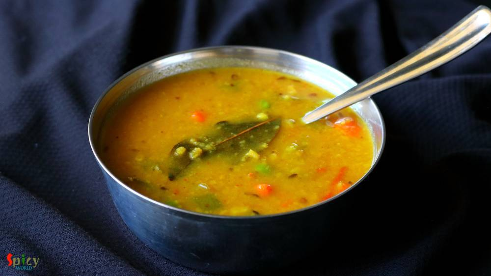
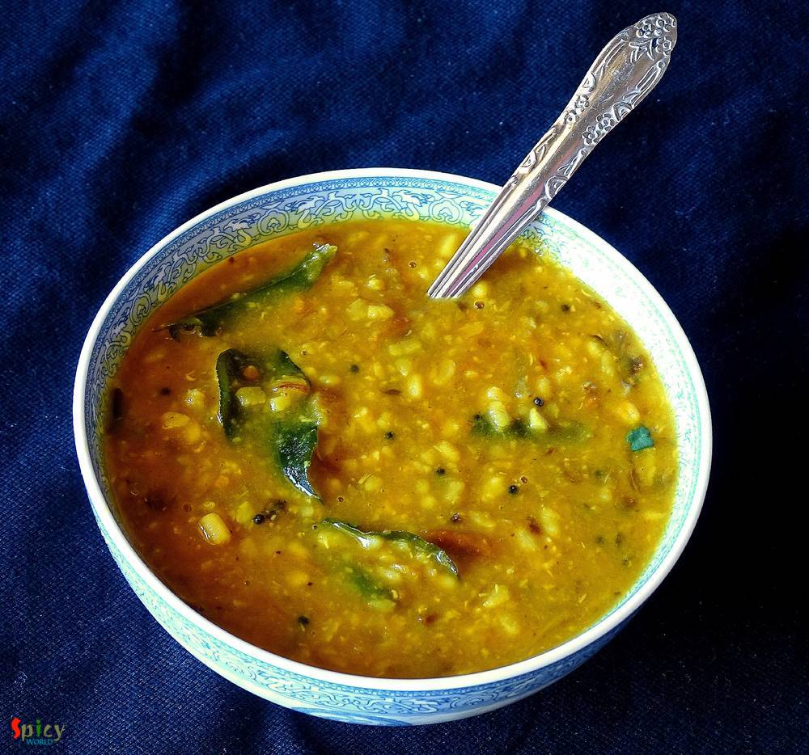

Simple and Easy Recipes
Posts on 'daal'

Veg Recipe
May 21, 2019
Musur Daaler Bhorta is traditional Bengali recipe. Bhorta / Bharta means mashed, it can be vegetables, chicken or lentils. In this recipe we will mash the boiled orange lentils with onion, mustard oil, fried red chilies and garlic. It tastes best with steamed rice and few drops of lemon juice. During summer Musur Daaler Bhorta is a must have. Try this easy recipe in your kitchen and let me know ho ...


Veg Recipe
Jan 14, 2019
Lehsuni Daal Tadka is a spicy toor lentil preparation which has a very flavorful garlicky tempering. This daal tadka goes best with plain chapati or rice. The recipe is very simple and easy. I usually make this lehsuni daal during winter as it tastes so good and seems comfort in a bowl in those chilly afternoons or nights. Try this in your kitchen and let me know how it turned out for you.

Nonveg Recipe
Dec 4, 2018
'Torka-ruti' has always been a great favorite of mine. It's great with any type of bread like naan, tandoori roti, lachha paratha ... but with plain chapati / roti, the pair becomes heavenly. I have already posted some recipes on 'dhaba style' but the most popular and well known recipe is 'dim torka' or 'whole moong daal with scrambled egg'. When they serve this dish with raw onion chunks, green c ...

Veg Recipe
Jun 3, 2018
'Sobji' means vegetables and 'daal' means lentils in Bengali. This is a very popular yellow Moong daal recipe which goes best with steamed rice. In Bengali weddings this daal is a must item for lunch. My husband is a fan of this dish. He doesn't even need any sides while having this particular daal and bhaat. Though I need something to go with it, so I have made few Beguni and my simple lunch beca ...

Veg Recipe
Mar 17, 2016
The best and most common weeknight's meal is dal and rice. Nobody likes to eat bland dal, everybody needs some zing to their comfort food sometimes. So, 'spicy urad dal' is my new favourite dal with some kick. You can also call this lentil soup 'tarke wali dal', now everyone has their own story of 'tempering'. I have used lots of garlic, fresh curry leaves, cumin and mustard seeds. But you can add ...

Veg Recipe
Dec 30, 2015
I heard a lot about this dish in past few months and started to research. As I never tasted it before, so I went to an Indian restaurant in Austin named 'Bombay Bistro' and tasted their 'daal bukhara'. Oh my god, it was lip smacking good and then I realized why this dal is so famous. Texture of the dal really impressed me a lot. The authentic recipe is very simple and easy but main trick here is t ...
")
Nonveg Recipe
Nov 9, 2015
This lentil soup is one of the traditional food in Bengal. Last weekend I had two fish heads in my fridge. I am personally not too much fond of plain fish head curry. So, I made this dish and it came out really perfect like 'biyebari'. In most of the bengali wedding this dish is must for lunch and everybody loves it. I ate the home made version of this daal twice from my mom. Those times I really ...